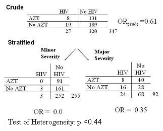
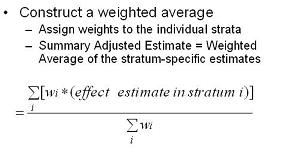
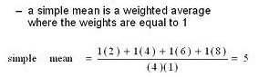

Adjustment
The method of modifying observations to account for external factors that may distort or skew associations in observations.
Adjusted Measure of Association
In the following case-control study of HIV seroconversion (Li 1997), we are looking at the effectiveness of AZT in preventing HIV seroconversion after a needlestick in health care workers.

The context is that needlesticks among health care workers from patients with HIV disease are unfortunately all too common. The question is whether taking the drug called AZT right after a needlestick can prevent the healthcare worker from becoming infected with HIV.
- Attempts to address this question with a RCT did not work because no doctor or nurse wanted to be randomized to the placebo group.
- However, there was no evidence for many years whether taking antiretroviral therapy, replete with its toxicity, would do any good in preventing HIV acquisition.
- So, this had to be sorted out observationally and luckily there were at least some doctors and nurses who did not elect to use AZT such that we have some variability to work with.
So, the exposure in question is the use of AZT and the outcome is the occurrence of HIV. Cases were health care workers who had acquired HIV after a needlestick and controls were health care workers who did not acquire HIV after a needlestick.
- In the crude analysis, the OR was 0.61, which by the way was not statistically significant, i.e. no strong evidence of a benefit from AZT.
- When the authors stratified by the severity of the needlestick, look at the stratum specific estimates; they are much lower. The first thing to decide is whether interaction is present. What do you think?
Well, this is a big difference in magnitude but note how few cases there are in the minor needlestick severity group. What would you want to do at this point?
- When we look at a statistical test of heterogeneity, we see a p value of 0.44 showing that chance could have easily caused this difference between strata.
- So, the authors did not decide to declare that there was any important interaction.
- Remember, although it is more interesting, it is also always more complicated to report interaction. That said, is there confounding here? How do you know? To determine the adjusted measure of association, we have to form a summary estimate of the two strata.
Summary Estimate
To determine the adjusted measure of association for the effect modifier, we have to form a summary estimate of the two strata.
To do this, we will form a weighted average of the stratum-specific estimates.

In other words, we will assign weights to the various strata and then take an average of the strata using these weights.
- We take the measure of association in each stratum and multiply by the weight and then divide by the total sum of the weights.
A simple mean is an example of a weighted average where all the weights are 1. 
Methods for Calculating Summary Adjusted Estimators
In our example, we know that the weighted average is going to be somewhere between 0.0 and 0.35, but where exactly is it going to be?
- So, how are we going to weight these two strata?
- Would you give them equal weight?
- Weight according to sample size?
- No. of cases?
- Variance?
Two methods for calculating summary adjusted estimators:
Interpretation of the Adjusted Estimate
Is confounding present or is there a third variable?
In the example of AZT use:
1 - Compare adjusted estimate to crude estimate
- e.g. compare ORMH (= 0.30) to ORcrude (= 0.61)
2 - If adjusted measure differs meaningfully from crude estimate, then confounding is present
- e.g., does ORMH = 0.30 “differ meaningfully” from ORcrude = 0.61?
What does differs meaningfully mean?
- This a matter of judgement based on biologic/clinical sense rather than on a statistical test.
- This is no one correct answer
- The objective is to remove bias.
- You need to be conservative - a 10% change from the crude is often used,
- Your threshold needs to be stated a priori and included in your methods section.
References
Li, R. W., & Wong, J. B. (1997). Postexposure treatment of HIV. N Engl J Med, 337(7), 499-500; author reply 501.
Jeff Martin, MD
See Also